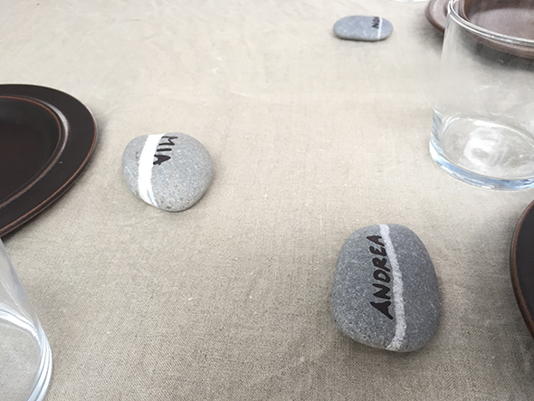

Eine sehr einfache und rustikale Tischdeko. Suche einfach Steine mit Streifen! Wenn Du lieber glänzende Steine haben möchten, kannst Du nach dem Beschriften ein bisschen Öl auf die Steine reiben.


Eine sehr einfache und rustikale Tischdeko. Suche einfach Steine mit Streifen! Wenn Du lieber glänzende Steine haben möchten, kannst Du nach dem Beschriften ein bisschen Öl auf die Steine reiben.


Nummern lernen Sortiere Steinchen nach Art oder Grösse und lege sie auf 6 verschiedene Häufchen. Die Augen des Würfels zeigen an von welchem Haufen Du einen…
Weiterlesen →

Die kleine Raupe Nimmersatt. Man kann Steine gut mit Fingerfarbe anmalen. Wenn die Farbe getrocknet ist, reibt man die Steine mit ein bisschen Holzleim ein. Das…
Weiterlesen →

Für alle, die es nicht erraten können, es handelt sich um ein Zebra und einen Hund.
Weiterlesen →